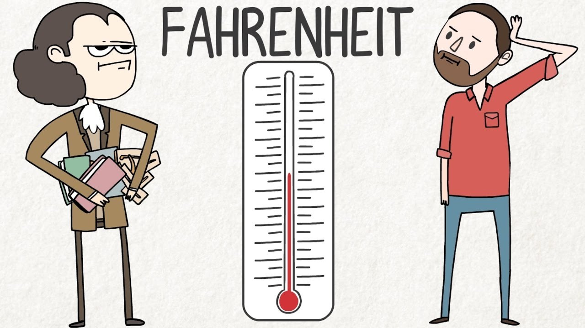
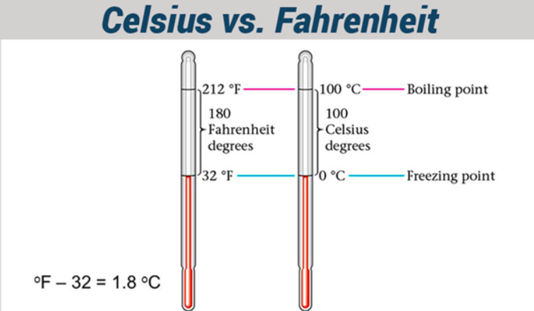
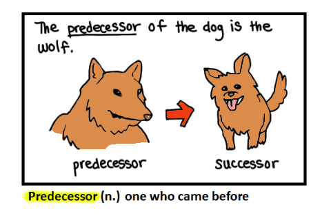
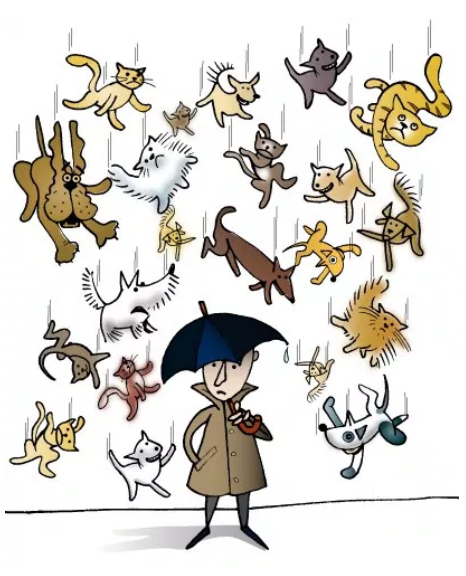
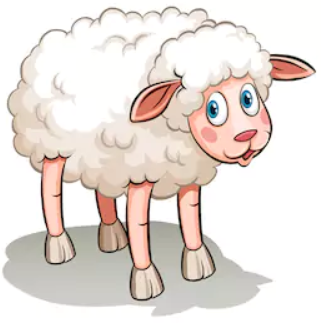
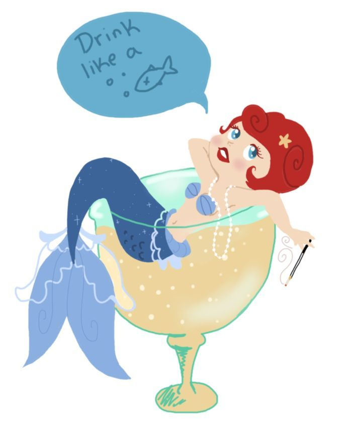

chapter14.1--handout
Background Information
Fahrenheit temperature and Celsius temperature（华氏与摄氏）

华氏和摄氏的中文名字我们都不陌生，但是看到长长的英文单词，还是会有一瞬间反映不过来的时候。那么这两个名称是怎么来的呢？很简单，用的是创立人的名字。
华氏温标是德国人华伦海特 (Fahrenheit)于1714年创立的温标，以℉表示。
摄氏温标则是瑞典人摄尔修斯 (Celsius)提出在的，记做 ℃。
两者之间如何换算可以参考下图:

在看美剧时，我们会发现美国人很爱使用华氏温标。这是为什么呢？
包括中国在内的大多数其他国家用摄氏度，其中一个原因是算起来确实方便些，美国用华氏度是因为继承英制，华氏度的优点是每一度温差小，在都取整数的情况下，比摄氏度更精确。并且华氏度在表达常见气温时还可以避免负数的出现。
“the gadfly of Athens"（雅典牛虻——苏格拉底）
提起牛虻我们首先想到是是一种昆虫。在这里就不放图啦~
牛虻（gadfly），长得像苍蝇（fly），但体型比苍蝇稍大一些。雌性牛虻吸牛等牲畜的血液，危害家畜。
这样看来，苏格拉底为什么要用牛虻这种“害虫”（insect pest）来“称呼自己”呢？
这还要从“苏格拉底之死”说起。
审判苏格拉底时，对于他的控诉点主要有三个：
不敬雅典城的主神们；
另立新神；
教些荒唐的东西来败坏青年们
这三条罪名可以算是条条致命，但当苏格拉底走上被告席时，这位70岁的老人并没有害怕，在为自己辩护时，他把自己比作一只牛虻, 是神赐给雅典的礼物。他知道神把他赐给雅典的目的是,用这只牛虻来刺激这个迟钝昏睡的时代。最后他坦然接受了被判处的刑罚，因为尊重法律，尊重民主审判流程。
trust account（信托账户）
这个词对于中国人来说或许仅是一个停留在法律条文和新闻报道中，在西方这一领域发展的已经比较成熟。
2017 年美国大选落幕，特朗普当选总统后在新闻发布会上宣布将把家族产业全部交由信托基金（trust fund ）打理，由特朗普的两个儿子及独立审查官员监督业务。一代商业帝国的掌舵者能够如此从容完成转身，这都归功于美国成熟的家族信托体系。
信托的起源可以追溯到古罗马帝国（The Roman Empire）时期。13 世纪中期，英国教徒们利用信托，实现死后将土地收益持续授予教会。18 世纪末 19 世纪初，美国从英国引进信托制度，并率先立法。19 世纪下半期，信托公司在美国迎来繁荣。后来信托引入日本、香港等地，被广泛应用于家族财富的延续和传承。
中国本土信托行业在 2007 年开始爆发式增长，2013 年首款家族信托产品发布，目前尚处于摸索时期。
信托简单来说就是将不定数量的遗产（heritage）、退休金（pension）账户、信托资产集合起来形成一个基金进行投资管理。
Vocabulary
predecessor
💧n. one who precedes you in time (as in holding a position or office)
名词：前任，前辈
💧The predecessor of the dog is the wolf.
狼是狗的祖先。

scald
💧v.burn with a hot liquid or steam
动词：烫伤；烫洗；加热；晒焦
💧[SYN] get a burn；heat up
💧Be careful not to scald yourself with the steam.
小心别让蒸汽把你烫着。
wrangle
💧v.to quarrel noisily, angrily or disruptively
动词：争论；争吵
💧[SYN] controversy; debate
Don't wrangle with others over trifles.
别为一些琐事与别人争吵。
perspicacity
💧n.intelligence manifested by being astute (as in business dealings)
名词：洞察力；聪颖；睿智
💧[SYN] insight; percepection
It was a marvellous effort of perspicacity to discover that I did not love her.
真是费了不少的劲才发现我本来就不爱她。
Crush Your Problems
- Get the other person saying "Yes, yes" at the outset.
句意：最好一开始让对方回答时一直说“是的，是的”。
💧at the outset：当初; 一开始
e.g. At the outset, it looked like a nice day.
一开始，天看上去很晴朗。
在写作时，和at the outset意思相近的词组还可以积累：
💧above all 首先;最重要的是
ahead of 领先;在...前面
begin with 以...开始;首先
first and foremost 首要地,首先 - I resolved this morning to use a little horse sense.
句意：这个早上，我用一些（课上学到的）常识技巧来处理问题。
💧 horse sense: 常识，粗浅实用的知识e.g.He's not very highly educated, but he's got a lot of horse sense.
他虽然没有受过很高的教育，但他的实际知识是丰富的。
💧 那么为什么horse sense是常识呢？
在十八十九世纪的美国西部，人们通常骑马代步。他们发现马匹不容易迷路，而且还懂得趋吉避凶，非常聪明，于是那里的人就认为马的理解能力，判断能力都不一般，于是用horse sense来指代常识。
💧其他几个常用的表示“常识”的词组还有：
common knowledge
general knowledge
common sense
💧这三个短语的区别是：
common sense意为通过直觉经验而不是通过研究而获得的,在美国口语中一般都用这个词；
common knowledge则是通过研究而不是仅凭经验而认识；
general knowledge则强调是普通常识,而非专业知识。 - He did something that only a handful of men in all history have been able to do: he sharply changed the whole course of human thought; and now, twenty-four centuries after his death, he is honored as one of the wisest persuaders who ever influenced this wrangling world.
句意：他做到了大多数人做不到的事情：他影响并改变了人类的思想进程，在他离开世界的24个世纪后的今天，他依旧是工人的最有智慧、最有说服力的人。
💧a handful of：一把，少数、几个、不多
e.g.A handful of onlookers stand in the field watching.
少数几个旁观者站在现场观看。
💧the whole course of human thought：人类思想的进程
在这里，course有“过程；进程”的意思， “ the couse of...”可以用来表达“...的进程”。
我们还可以积累意思相近的词组：
in course of ：正在…之中,在…的过程中，强调现在的状态 现在的进行的过程
in the course of ：在…过程中；在…期间，它更强调在一大段时间内的过程 不强调现在的状态、只说明了这段时间的状态
e.g. The United States Declaration of Independence begins, “ When in the course of human events ”, and speaks of unalienable rights such as life, liberty and the pursuit of happiness.
美国《独立宣言》是以“在人类历史上”开始的，并谈到诸如生命、自由和追求幸福等不可剥夺的权利。
Content Analysis
日常生活中我们经常会遇到需要说服别人的情况，那么应该怎么做呢？卡叔今天给出的办法是：自始至终，不断地强调双方都赞同的事情，强调彼此目标一致，在适当情况下，再谈方式、方法上的差异。
（Begin by emphasizing — and keep on emphasizing — the things on which you agree. Keep emphasizing, if possible, that you are both striving for the same end and that your only difference is one of method and not of purpose.）
如果你能让对方回答你的问题，并一直说“是”，哪里还有不能说服的道理呢？
双方交谈时，一开始得到肯定态度尤其重要。因为一旦说出“不”这种否定的字眼，那么困难就变得不可逾越了，因为自尊心会固执的维护自己认为错误的观点，当时一时脑热觉得维护尊严大于一切，或许事情平息后反应过来当时的“不”是不恰当的，那也无从后悔了。
出纳员詹姆斯. 艾博森遇到不愿意填写申请表格所需信息的顾客时，以前的办法是盛气凌人的告诉顾客：如果不配合银行提供这些信息的话，银行会拒绝开户。这样的说话方式让他觉得自己很有气势，银行有银行的规定，这里我说了算。
（Naturally, an ultimatum like that made me feel good. I had shown who was boss, that the bank's rules and regulations couldn't be flouted.）
但“神气”的结果就是顾客放弃在他这里开户，不想把自己的钱存在他们的银行里。

上课之后，他采取了新的处理方式：先不谈银行的各种规定，而是先谈顾客的需求。
（I resolved not to talk about what the bank wanted but about what the customer wanted.）
他向顾客提问，引导顾客用“是”回答他的问题，最后顾客离开银行前，不但把所有情形填上表格，而且还接受了我的建议，用了他母亲的名义，开了个信托帐户，有关他母亲的情形，也按照表格详细填上。
（Before leaving the bank, this young man not only gave me complete information about himself but he opened, at my suggestion, a trust account, naming his mother as the beneficiary for his account, and he had gladly answered all the questions concerning his mother also.）
销售代表约瑟夫.艾利逊也通过这种方法从一个连续拜访十三年都没有成功的客户手里拿到了一笔很大的订单。因为他现在终于明白，争辩并不是一个聪明的办法。要从对方的观点去看事，设法让别人回答“是”，那才是一套成功的办法。
（I found that by getting him to say 'yes, yes' from the outset, he forgot the issue at stake and was happy to do all the things I suggested.）
相比于后知后觉尝到这种方法甜头的前两位，弓箭商店的店员显然早就深谙此道，才能把本来只想临时租用弓箭器材设备的艾迪变成了他们的老顾客。
其实这些人都用了同一种方法——“苏格拉底辩证法”式。这个方法就是让听话的人直接方应为“是”。他问的问题，都是他的反对者所愿意接受而同意的。他连续不断的获得对方的同意、承认，到最后，使反对者在不知不觉中，接受了在数分钟前还在坚决否认的结论。
His whole technique, now called the "Socratic method" was based upon getting a "yes, yes" response.
He asked questions with which his opponent would have to agree. He kept on winning one admission after another until he had an armful of yeses. He kept on asking questions until finally, almost without realizing it, his opponents found themselves embracing a conclusion they would have bitterly denied a few minutes previously.
所以大家下次在说服别人的时候，不要忘记苏格拉底的这套方法，要让对方不断回答“是”。
Today's Bonus
英语中和动物有关的俚语 今天的章节里，我们接触到了一个很有意思的表达“horse sense”, 这两个词单独来看我们都认识，可是如果理解为“马的直觉”那就闹笑话啦~
其实英语中还有很多与动物有关的有趣俚语，我们一起来看几个吧！
先来一个大家比较熟悉的经典俚语：
- raining cats and dogs
💧这个短语如果从字面上理解就是“阿猫阿狗满天飞”，真正的意思是用来形容“雨下的很大”。

这个俚语有一种说法是源于北欧神话。布鲁尔（Brewer）在他的《成语预言大辞典》（Dictionary of Phrase and Fable）中写过,
“In Norse mythology, the cat is supposed to have great influence on the weather. Witches that rode on storms were said to assume ‘the form of cats.’ Dogs and wolves were attendants to Odin, the god of storms, and the dog ‘is a signal of wind.’”
挪威神话中认为猫对天气有重大影响。猫是乘暴风雨而来的巫师的原型。狗和狼是风神奥丁的随从，狗是风的象征 - as innocent as a lamb

💧我们经常用“Too young too simple , sometimes naïve”开玩笑说某个人太年轻没有经受多少社会的毒打，那么形容一个人“非常无辜，天真无邪”，就可以用as innocent as a lamb来表达。 - pig out
💧答应我，千万别把这个短语理解为“猪出来”。
英语里面关于pig的一种象征意义，其实也和我们汉语一样，都有“吃货”的意思。这个短语的真正含义便是“暴饮暴食；狼吞虎咽，大吃特吃”。
为了自己还是管住嘴，迈开腿。但猪哥说，我胖我乐意！
- drink like a fish
💧“Drink like a fish” 字面上看起来会让人以为是“像鱼一样喝水”，可是我们却忽略了“drink”的意思，drink除了常用的“喝水”，也有“饮酒”和“酒”的意思，所以这里，是“像鱼一样喝酒”，那就是“喝多了”。
 - monkey see, monkey do
💧看起来有点像中国式英语“猴子看到什么就学什么”。意思就是模仿，有样学样。猴子很聪明，模仿能力特别强。婴儿也是一样，看到什么学什么。
不过用的时候要注意，这个俚语偏贬义，对应的中文典故就是东施效颦。
smart word
本章中推荐的 "Yes, yes" 法像一句特效咒语，可以帮助我们说服别人于无形。正应了中国那句古语“He who treads softly goes far.”